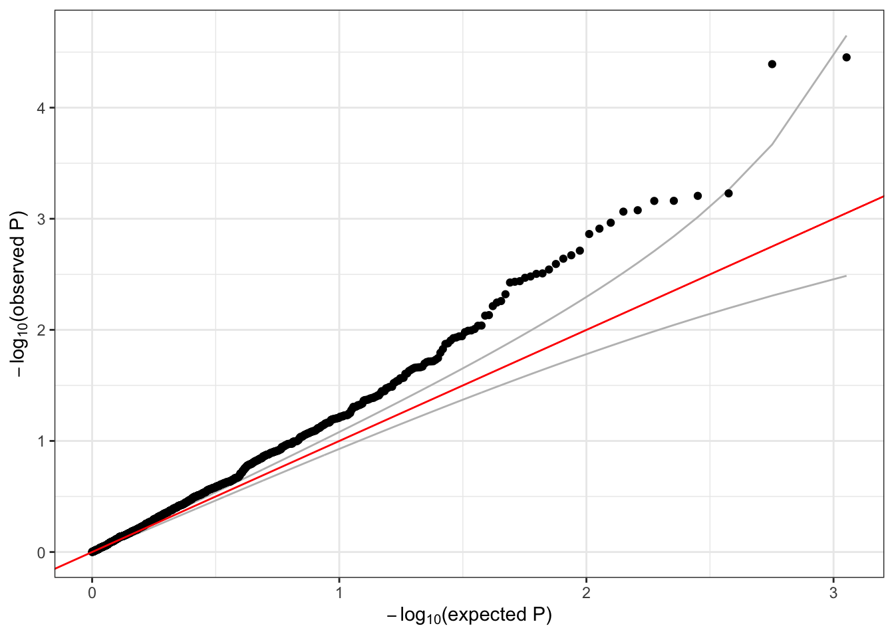

4 Association tests - Part I
These exercises introduce genetic association testing: how to identify which genetic variants are associated with a phenotype. In this example, we will test for an association between variant genotypes and height, adjusting for sex, age, and study. Here, we introduce fitting the “null model” and single-variant association testing, as is commonly performed in GWAS (Genome Wide Association Studies).
4.1 Null model
The first step in our association testing procedure is to fit the null model – i.e., a model fit under the null hypothesis of no individual variant association. Operationally, this is fitting a regression model with the desired outcome phenotype, fixed effect covariates, and random effects.
4.1.1 Prepare the data
To fit the null model, we will need to create an AnnotatedDataFrame with sample information and phenotype data; this class is defined in the Biobase package. We will merge our sample annotation file, which is indexed by a sample.id column matched to the GDS file, with our phenotype file, which is indexed by a subject_id column. We will use the dplyr package for data.frame manipulation.
NOTE: In this example, we use the 1000 Genomes IDs for both sample and subject IDs, though we would generally advise using separate IDs for samples (sequencing instances) and subjects (individuals).
# sample annotation
repo_path <- "https://github.com/UW-GAC/SISG_2021/raw/master"
if (!dir.exists("data")) dir.create("data")
sampfile <- "data/sample_annotation.RData"
if (!file.exists(sampfile)) download.file(file.path(repo_path, sampfile), sampfile)
samp <- get(load(sampfile))
library(Biobase)
# access the data with the pData() function
head(pData(samp))## sample.id subject.id Population Population.Description sex status
## 1 HG00096 HG00096 GBR British in England and Scotland M 0
## 2 HG00097 HG00097 GBR British in England and Scotland F 1
## 3 HG00099 HG00099 GBR British in England and Scotland F 0
## 4 HG00100 HG00100 GBR British in England and Scotland F 1
## 5 HG00101 HG00101 GBR British in England and Scotland M 0
## 6 HG00102 HG00102 GBR British in England and Scotland F 0# access the metadata with the varMetadata() function
varMetadata(samp)## labelDescription
## sample.id sample identifier
## subject.id subject identifier
## Population population abbreviation
## Population.Description population description
## sex sex
## status simulated case/control status# phenotype data
phenfile <- "data/phenotype_annotation.RData"
if (!file.exists(phenfile)) download.file(file.path(repo_path, phenfile), phenfile)
phen <- get(load(phenfile))
# access the data with the pData() function
head(pData(phen))## subject_id sex age height study
## 1 HG00096 M 47 165.3 study_1
## 2 HG00102 F 49 169.1 study_1
## 3 HG00112 M 46 167.9 study_1
## 4 HG00114 M 49 169.5 study_1
## 5 HG00115 M 35 161.1 study_1
## 6 HG00116 M 37 182.2 study_1# access the metadata with the varMetadata() function
varMetadata(phen)## labelDescription
## subject_id subject identifier
## sex subject's sex
## age age at measurement of height
## height subject's height in cm
## study study identifier# merge sample annotation with phenotype data
library(dplyr)
dat <- pData(samp) %>%
left_join(pData(phen), by=c("subject.id"="subject_id", "sex"="sex"))
head(dat)## sample.id subject.id Population Population.Description sex status age height study
## 1 HG00096 HG00096 GBR British in England and Scotland M 0 47 165.300 study_1
## 2 HG00097 HG00097 GBR British in England and Scotland F 1 47 144.780 study_3
## 3 HG00099 HG00099 GBR British in England and Scotland F 0 40 185.500 study_2
## 4 HG00100 HG00100 GBR British in England and Scotland F 1 45 150.622 study_3
## 5 HG00101 HG00101 GBR British in England and Scotland M 0 40 177.800 study_3
## 6 HG00102 HG00102 GBR British in England and Scotland F 0 49 169.100 study_1# merge the metadata
meta <- bind_rows(varMetadata(samp), varMetadata(phen)[3:5,,drop=FALSE])
# make an AnnotatedDataFrame
annot <- AnnotatedDataFrame(dat, meta)
save(annot, file="data/sample_phenotype_annotation.RData")4.1.2 Fit the null model
We use the fitNullModel function from the GENESIS package to fit the null model. We need to specify the outcome (height) and the fixed effect covariates (sex, age, and study). If the sample set involves multiple distinct groups with different variances for the phenotype, we recommend allowing for heterogeneous residual variance among groups with the group.var parameter. We saw in a previous exercise that the variance of height differs by study.
library(GENESIS)
# fit the null model
nullmod <- fitNullModel(annot,
outcome="height",
covars=c("sex", "age", "study"),
group.var="study",
verbose=FALSE)
save(nullmod, file="data/null_model.RData")The fitNullModel function returns a lot of information about the model that was fit. We examine some of that information below; to see all of the components, try names(nullmod).
# description of the model we fit
nullmod$model## $hetResid
## [1] TRUE
##
## $family
##
## Family: gaussian
## Link function: identity
##
##
## $outcome
## [1] "height"
##
## $covars
## [1] "sex" "age" "study"
##
## $formula
## [1] "height ~ sex + age + study + var(study)"# fixed effect regression estimates
nullmod$fixef## Est SE Stat pval
## (Intercept) 163.67175933 3.18936046 2633.542247 0.000000e+00
## sexM 6.28764509 0.68812251 83.491932 6.397653e-20
## age 0.07519782 0.06921691 1.180283 2.772984e-01
## studystudy_2 10.63152325 0.82176939 167.375182 2.769992e-38
## studystudy_3 -8.96183691 0.84479021 112.537257 2.724959e-26# residual variance estimates by group.var
nullmod$varComp## V_study_1 V_study_3 V_study_2
## 98.20191 168.82044 155.70722# model fit: fitted values, residuals
head(nullmod$fit)## outcome workingY fitted.values resid.marginal resid.PY resid.cholesky sample.id
## HG00096 165.300 165.300 173.4937 -8.193702 -0.08343729 -0.8268376 HG00096
## HG00097 144.780 144.780 158.2442 -13.464220 -0.07975468 -1.0362599 HG00097
## HG00099 185.500 185.500 177.3112 8.188805 0.05259104 0.6562452 HG00099
## HG00100 150.622 150.622 158.0938 -7.471824 -0.04425900 -0.5750613 HG00100
## HG00101 177.800 177.800 164.0055 13.794520 0.08171119 1.0616810 HG00101
## HG00102 169.100 169.100 167.3565 1.743547 0.01775472 0.1759437 HG00102# plot the residuals vs the fitted values
library(ggplot2)
ggplot(nullmod$fit, aes(x = fitted.values, y = resid.marginal)) +
geom_point(alpha = 0.5) +
geom_hline(yintercept = 0) +
geom_smooth(method = 'lm')4.2 Exercise
- As discussed in the lecture, we recommend a fully adjusted two-stage inverse Normalization procedure for fitting the null model when phenotypes have non-Normal distributions. Using the
two.stageoption infitNullModel, fit a two-stage null model. Compare these residuals with the residuals from the original null model.
4.3 Solution
- As discussed in the lecture, we recommend a fully adjusted two-stage inverse Normalization procedure for fitting the null model when phenotypes have non-Normal distributions. Using the
two.stageoption infitNullModel, fit a two-stage null model. Compare these residuals with the residuals from the original null model.
To run the fully adjusted two.stage null model, we simply set the two.stage option to TRUE. The norm.option parameter determines if the inverse Normalization should be done with all samples together ("all") or within each group.var group separately ("by.group").
nullmod.twostage <- fitNullModel(annot,
outcome="height",
covars=c("sex", "age", "study"),
group.var="study",
two.stage = TRUE,
norm.option = "all",
verbose=FALSE)
save(nullmod.twostage, file="data/null_model_two_stage.RData")
# description of the model we fit
nullmod.twostage$model## $hetResid
## [1] TRUE
##
## $family
##
## Family: gaussian
## Link function: identity
##
##
## $outcome
## [1] "height"
##
## $covars
## [1] "sex" "age" "study"
##
## $formula
## [1] "rankInvNorm(resid(height)) ~ sex + age + study + var(study)"# compare the marginal residuals
# merge the data for plotting
pdat <- merge(nullmod$fit, nullmod.twostage$fit,
by = 'sample.id', suffixes = c('.orig', '.twostage'))
pdat <- merge(pdat, pData(annot), by = 'sample.id')
# distribution of residuals - original null model
ggplot(pdat, aes(x = resid.marginal.orig)) +
geom_density(aes(color = study)) +
geom_density(size = 2)
# distribution of residuals - two stage null model
ggplot(pdat, aes(x = resid.marginal.twostage)) +
geom_density(aes(color = study)) +
geom_density(size = 2)# compare residuals
ggplot(pdat, aes(x = resid.marginal.orig, y = resid.marginal.twostage, color = study)) +
geom_point() +
geom_abline(intercept = 0, slope = 1)
There is not much difference in the residual here because the distribution of height is not far from Normal to begin. See Sofer et al. for more information on the fully adjusted two-stage model.
4.4 Single-variant association tests
After fitting our null model, we can use score tests to test each variant across the genome individually for association with the outcome phenotype (i.e. height in our example). Performing these single-variant tests genome-wide is commonly referred to as a GWAS (Genome-Wide Association Study).
We use the assocTestSingle function in GENESIS. First, we have to create a SeqVarData object including both the GDS file and the sample annotation containing phenotype data. We then create a SeqVarBlockIterator object, which breaks the set of all variants in the SeqVarData object into blocks, allowing us to analyze genome-wide in manageable pieces. The assocTestSingle function iterates over all blocks of variants in the SeqVarBlockIterator object and then concatenates and returns the results.
library(SeqVarTools)
gdsfile <- "data/1KG_phase3_subset_chr1.gds"
if (!file.exists(gdsfile)) download.file(file.path(repo_path, gdsfile), gdsfile)
gdsfmt::showfile.gds(closeall=TRUE) # make sure file is not already open
gds <- seqOpen(gdsfile)
# make the seqVarData object
seqData <- SeqVarData(gds, sampleData=annot)
# make the iterator object
iterator <- SeqVarBlockIterator(seqData, verbose=FALSE)
iterator## SeqVarBlockIterator object; on iteration 1 of 1
## | GDS:
## File: /Users/mconomos/Documents/SISG_2021/data/1KG_phase3_subset_chr1.gds (70.5K)
## + [ ] *
## |--+ description [ ] *
## |--+ sample.id { Str8 1126 LZMA_ra(9.66%), 877B } *
## |--+ variant.id { Int32 1120 LZMA_ra(17.5%), 793B } *
## |--+ position { Int32 1120 LZMA_ra(78.5%), 3.4K } *
## |--+ chromosome { Str8 1120 LZMA_ra(4.55%), 109B } *
## |--+ allele { Str8 1120 LZMA_ra(26.0%), 1.2K } *
## |--+ genotype [ ] *
## | |--+ data { Bit2 2x1126x1121 LZMA_ra(8.34%), 51.4K } *
## | |--+ extra.index { Int32 3x0 LZMA_ra, 18B } *
## | \--+ extra { Int16 0 LZMA_ra, 18B }
## |--+ phase [ ]
## | |--+ data { Bit1 1126x1120 LZMA_ra(0.11%), 177B } *
## | |--+ extra.index { Int32 3x0 LZMA_ra, 18B } *
## | \--+ extra { Bit1 0 LZMA_ra, 18B }
## |--+ annotation [ ]
## | |--+ id { Str8 1120 LZMA_ra(40.4%), 3.6K } *
## | |--+ qual { Float32 1120 LZMA_ra(2.46%), 117B } *
## | |--+ filter { Int32,factor 1120 LZMA_ra(2.46%), 117B } *
## | |--+ info [ ]
## | \--+ format [ ]
## \--+ sample.annotation [ ]
## | sampleData:
## An object of class 'AnnotatedDataFrame'
## rowNames: 1 2 ... 1126 (1126 total)
## varLabels: sample.id subject.id ... study (9 total)
## varMetadata: labelDescription
## | variantData:
## An object of class 'AnnotatedDataFrame': none# run the single-variant association test
assoc <- assocTestSingle(iterator, nullmod)## # of selected samples: 1,126dim(assoc)## [1] 1129 14head(assoc)## variant.id chr pos allele.index n.obs freq MAC Score Score.SE Score.Stat Score.pval Est Est.SE PVE
## 1 1 1 970546 1 1126 0.0039964476 9 -0.1191236 0.2577712 -0.4621292 0.643988693 -1.792788 3.879410 0.0001905115
## 2 2 1 985900 1 1126 0.0492895204 111 -1.6707553 0.8841849 -1.8895996 0.058811535 -2.137109 1.130985 0.0031851797
## 3 3 1 1025045 1 1126 0.0004440497 1 -0.2795838 0.1007173 -2.7759261 0.005504472 -27.561563 9.928781 0.0068740102
## 4 4 1 1265550 1 1126 0.0008880995 2 -0.1105487 0.1085480 -1.0184319 0.308472744 -9.382319 9.212515 0.0009252485
## 5 5 1 1472676 1 1126 0.0071047957 16 0.3630992 0.3456555 1.0504657 0.293504065 3.039054 2.893054 0.0009843694
## 6 6 1 1735725 1 1126 0.0022202487 5 -0.1300405 0.1973175 -0.6590420 0.509868790 -3.340007 5.067973 0.0003874544We make a QQ plot to examine the results.
library(ggplot2)
qqPlot <- function(pval) {
pval <- pval[!is.na(pval)]
n <- length(pval)
x <- 1:n
dat <- data.frame(obs=sort(pval),
exp=x/n,
upper=qbeta(0.025, x, rev(x)),
lower=qbeta(0.975, x, rev(x)))
ggplot(dat, aes(-log10(exp), -log10(obs))) +
geom_line(aes(-log10(exp), -log10(upper)), color="gray") +
geom_line(aes(-log10(exp), -log10(lower)), color="gray") +
geom_point() +
geom_abline(intercept=0, slope=1, color="red") +
xlab(expression(paste(-log[10], "(expected P)"))) +
ylab(expression(paste(-log[10], "(observed P)"))) +
theme_bw()
}
qqPlot(assoc$Score.pval)
A lot of the variants we tested are very rare – the alternate allele is not observed for many samples. Single-variant tests do not perform well for very rare variants (we will discuss testing rare variants in more detail in the next session). We can use the minor allele count (MAC) observed in the sample to filter rare variants that we may expect to have unreliable test results.
summary(assoc$MAC)## Min. 1st Qu. Median Mean 3rd Qu. Max.
## 1.00 1.00 3.00 86.62 30.00 1123.00sum(assoc$MAC < 5)## [1] 619qqPlot(assoc$Score.pval[assoc$MAC >= 5])We should expect the majority of variants to fall near the red y=x line in the QQ plot. The deviation above the line, commonly referred to as “inflation” is indicative of some model issue. In this example, the issue is likely driven by the fact that we’ve ignored genetic ancestry and relatedness among these subjects – more to come later when we discuss mixed models.
4.5 Exercise
- GENESIS also supports testing binary (e.g. case/control) outcomes. We can fit a null model using logistic regression by specifying the argument
family=binomialin thefitNullModelfunction. Use thestatuscolumn in the sample annotation to fit a null model for simulated case/control status, withsexandPopulationas covariates. Run single-variant association tests using this model and make a QQ plot of all variants with MAC >= 5.
4.6 Solution
- GENESIS also supports testing binary (e.g. case/control) outcomes. We can fit a null model using logistic regression by specifying the argument
family=binomialin thefitNullModelfunction. Use thestatuscolumn in the sample annotation to fit a null model for simulated case/control status, withsexandPopulationas covariates. Run single-variant association tests using this model and make a QQ plot of all variants with MAC >= 5.
When testing binary outcomes, we should fit our null model using logistic regression. To do so, we simply set the argument family=binomial in fitNullModel. Note that the parameter group.var is no longer relevant here, as the logistic model specifies the mean-variance relationship.
# fit the null model with logistic regression
nullmod.status <- fitNullModel(annot,
outcome="status",
covars=c("sex", "Population"),
family=binomial,
verbose=FALSE)
resetIterator(iterator, verbose=FALSE)
# run the single-variant association test
assoc.status <- assocTestSingle(iterator, nullmod.status, test="Score")## # of selected samples: 1,126dim(assoc.status)## [1] 1129 14head(assoc.status)## variant.id chr pos allele.index n.obs freq MAC Score Score.SE Score.Stat Score.pval Est Est.SE PVE
## 1 1 1 970546 1 1126 0.0039964476 9 0.20256722 0.8351783 0.2425437 0.80835892 0.2904095 1.1973491 5.242118e-05
## 2 2 1 985900 1 1126 0.0492895204 111 -2.64169956 2.6522412 -0.9960254 0.31923781 -0.3755410 0.3770396 8.840314e-04
## 3 3 1 1025045 1 1126 0.0004440497 1 -0.09916904 0.2972472 -0.3336248 0.73866267 -1.1223819 3.3642035 9.918446e-05
## 4 4 1 1265550 1 1126 0.0008880995 2 0.81717324 0.4033577 2.0259271 0.04277226 5.0226565 2.4791892 3.657417e-03
## 5 5 1 1472676 1 1126 0.0071047957 16 0.64418361 1.0778277 0.5976685 0.55006117 0.5545121 0.9277921 3.183080e-04
## 6 6 1 1735725 1 1126 0.0022202487 5 -0.46319177 0.6396675 -0.7241134 0.46899613 -1.1320153 1.5633123 4.672400e-04# make a QQ plot
qqPlot(assoc.status$Score.pval[assoc.status$MAC >= 5])Extra: in samples with highly imbalanced case:control ratios, the Score test can perform poorly for low frequency variants. Saddlepoint approximation (SPA) can be used to improve p-value calculations, and is available in GENESIS by setting the argument test=Score.SPA in assocTestSingle. See Dey et al. and Zhou et al. for details on using SPA in GWAS.
# close the GDS file!
seqClose(seqData)